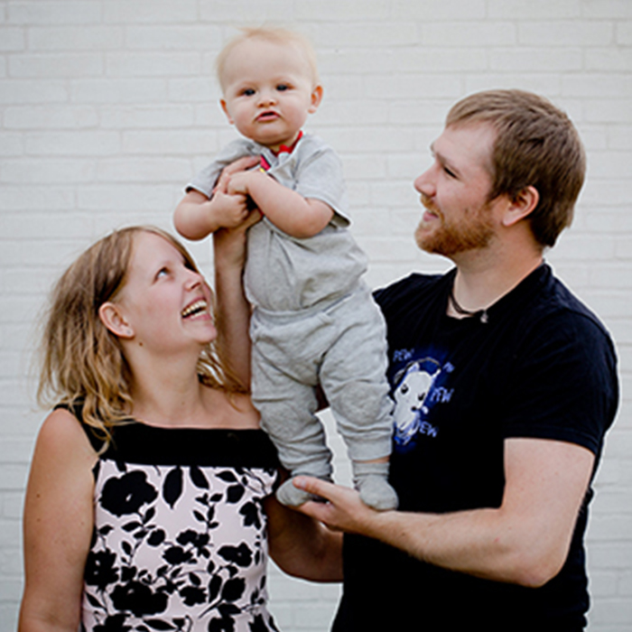
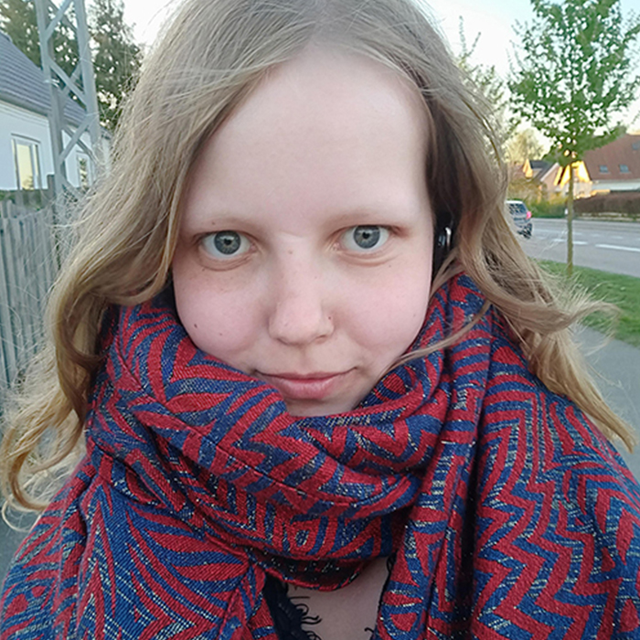
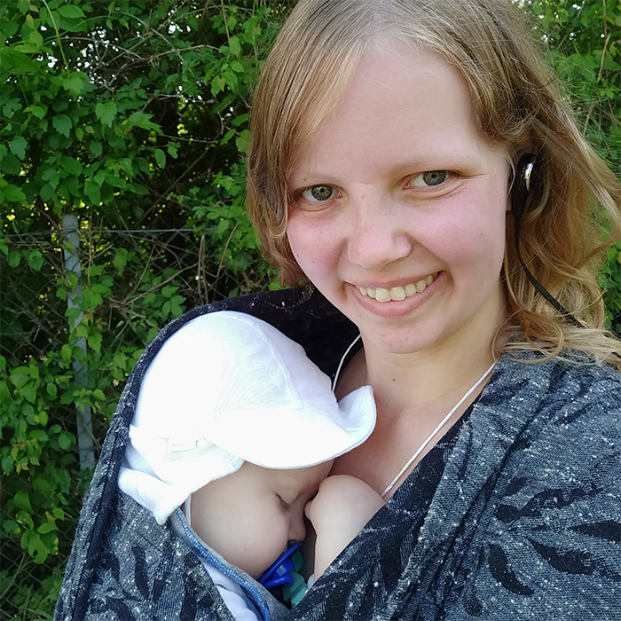

Historien...
... handler om en lille bornholmer, der som 11-årig flyttede til det store Jylland. Senere fik jeg
en kæreste, og flyttede med ham 2 år til England. Han er webudvikler. En af mine veninder
bliver (forhåbentlig) webudvikler i sommeren 2019. En anden veninde er e-koncept-udvikler. Min
fætter er multimediedesigner.
Jeg blev træt af ikke at kunne følge med i deres samtaler, så nu måtte jeg jo hellere tage mig
sammen og søge ind på uddannelsen, så jeg har mulighed for at beholde mine venner.
Udover at gå på KEA, arbejder jeg lige nu som oversætter af danske artikler til engelsk, hos
FirstAgenda
i Aarhus.

Uddannelsen...
... er Multimediedesigner, som foregår på Københavns Erhvervsakademi. Her startede jeg i august 2018, så jeg er forhåbentlig uddannet multimediedesigner i midten af
2020. Derefter håber jeg at gå videre til web development, da jeg helt bestemt interesserer mig mest
for kode-delen af uddannelsen. Jeg har altid været meget logisk anlagt og god til matematik, og jeg
synes at det er enormt spændende at lære at kode i sprog, hvor jeg efterhånden kan se at det hele
bliver funktionelt på skærmen.

Fritiden...
... Hahahaha! Den stryger vi. Jeg er nemlig mor til en skøn, lille dreng ved navn Mikkel, fra
september 2017. Dermed indebærer mine kvalifikationer, udover multimedie og oversættelse, også:
rengøringsdame, kok med speciale i overkogte og undersaltede grøntsager, klovn, professionel
flaskekoger, meditationsinstruktør, samt ekspert inden for alt der er at vide om Mickey Mouses
klubhus.
Når jeg en gang imellem har 20 minutter for mig selv, nyder jeg dem dog gerne med en øl og
Uncharted-spillene på Playstation 4, som jeg med utallige bandeord er ved at gennemføre på 'Brutal'
difficulty.